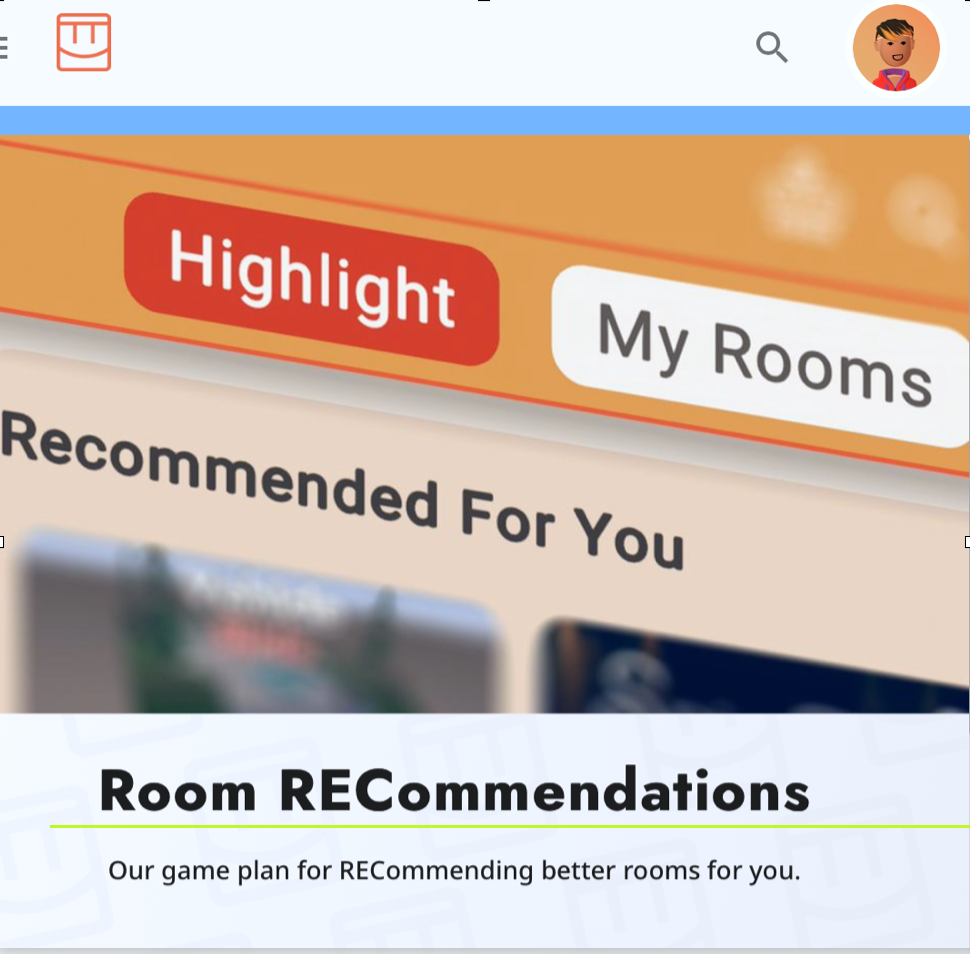

Connecting Players to Content They'll Love at Rec Room, Inc.
UI Engineering
At Rec Room, I helped deliver UI improvements backed by A/B testing and analytics. I helped improve the cross-platform game menus, including localizing text, showing more data in the UI for discovery, and freshening up content layouts.
Note: "X.X" means a value between 0.0-9.9 — happy to discuss in more detail, off-the-record!
- Added localization support for eight languages via proprietary and Unity localization tools.
- Improved time spent and room visits by X.X% for new players by removing scroll from main content menu.
- Improved content discovery by stacking rows; increased impressions by X.X% and click-throughs by X.X%.
- Shipped other experiments and improvements in areas like social features, notifications, and customization.
- Fixed bugs for VR optimization project by the Lead UI Engineer.
- Fixed bugs for menu in the player's room and in a new player discovery flow.
- Other content discovery experiments only validated the control group, but nonetheless led to learnings.